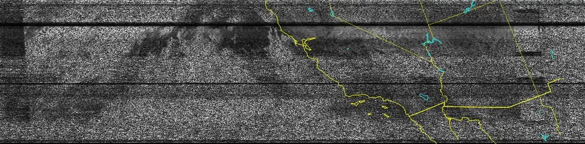
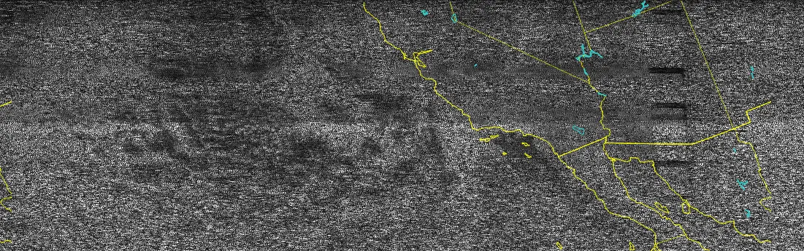

KO6BCW Eli Hickox
My interests with amateur radio include:
- Contests
- Receiving weather transmissions from satellites
- Checking into Nets
- CQing around my area seeing who I can contact
I have a very basic UHF/VHF setup with a few HTs.
I like to go to local parks and hills for some casual POTA and SOTA.
I'm active on the WIN System Insomniac Trivia Net
Contests I have participated in:
- 2023 ARRL September VHF Contest (Single Operator, Portable, Analog Only)
Here is an image from NOAA-18 I captured with my HT and cellphone.

Here is one from NOAA-19
